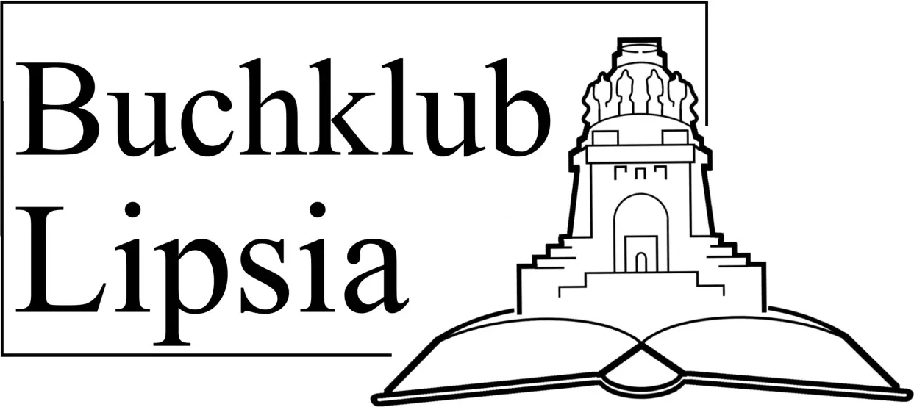

Unser kleiner Buchklub besteht derzeit aus {{(len members)}} Mitgliedern und ist auf der Suche nach Neuzugängen!
Aktuelle Lektüre
{{#each books}} {{#if (not done)}} Wir lesen gerade »{{name}}« ({{author}}, {{year}}), vorgeschlagen von {{lookup (lookup ../members originator) "name"}}, {{proposal-date}}. {{/if}} {{/each}}
Über uns
Wir haben den {{global.name}} im März 2024 in Leipzig gegründet und seitdem {{len books}} Bücher gelesen und besprochen. Wie genau unser Format funktioniert kann der Satzung entnommen werden; in Kürze also: Nacheinander ist jedes Mitglied an der Reihe, ein Buch vorzuschlagen. Nach drei Wochen treffen wir uns an einem Ort, den der Buchvorschläger bestimmt hat (z. B. ein Café) und besprechen völlig frei die Lektüre. Anschließend verfasst jedes Mitglied eine Rezension für die Website.Wir sind basisdemokratisch organisiert; der Titel des Präsidenten und seines Vizes (siehe Mitglieder) sind also hauptsächlich repräsentativer Natur.